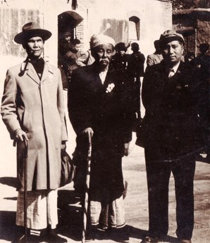

 |
|
| Born | Pe Thein, October 24, 1889, Man Kyee Tone, Shwebo district, British Burma |
|---|---|
| Died | August 10, 1973 (aged 83) |
| Occupations | Writer,translator,editor |
| Parents | Ayar (father), Shwe (mother) |
| Awards | Translation Award (1952,1955), Lifetime Achievement Award (1961) |
Shwe U Daung (U Pe Thein) was born on 24 October 1889 (Burmese calendar: 2nd of the waxing moon, Tazaungmon, 1251) in Shwebo District, British Burma (now Myanmar). His birth name was Maung Pe Thein, but he later adopted the pen name "Shwe U Daung" ("Golden Peacock"), symbolising Burma's regal identity under the Konbaung dynasty before British colonisation. His father was U Ayar, and his mother was Daw Shwe. He was the third of five siblings.
Shwe U Daung was born after the British occupation of Burma, a period of great instability as the country transitioned from a sovereign kingdom to a British colony. Growing up, he experienced the complexities of a country in transition, as its people adapted to the new political realities of colonial governance. His early life was characterised by poverty and hardship which had a significant impact on his subsequent works.